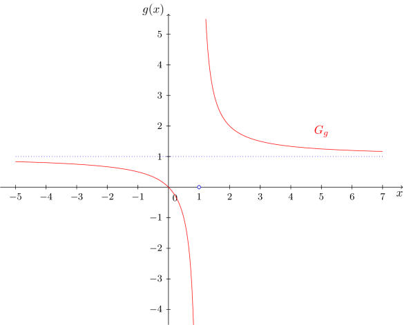

Beispiel
6.2.21
Wir betrachten die Funktion
und stellen fest, dass deren Abbildungsvorschrift in der Form einer Summe aus einem Polynom (vom Grad
) und einem echt gebrochenrationalen Term vorliegt. Durch Bilden des Hauptnenners ist es nun einfach
auf eine unecht gebrochenrationale Form zu bringen, in der der Zählergrad und der Nennergrad gleich sind:
Wir können
also auch schreiben als
und betrachten den zugehörigen Graphen:

Neben der Polstelle und Definitionslücke bei
erkennen wir, dass der Wert
eine besondere Rolle spielt. Dieser wird offenbar von der Funktion
nie angenommen. Für die Wertemenge von
gilt
. Stattdessen nähert sich
für ,,sehr große" und ,,sehr kleine" Werte der Veränderlichen
immer stärker dem Wert
an ohne diesen jemals für eine reelle Zahl
zu erreichen.
Dies erkennt man in der Abbildungsvorschrift
folgendermaßen. Für ,,sehr große" (
,
,
, usw.) oder ,,sehr kleine" (
,
,
, usw.) Werte für
nähert sich der echt gebrochenrationale Anteil
immer mehr der
an, da
dort im Nenner vorkommt. Tendenziell bleibt also für solche Werte nur noch der polynomielle Anteil
aus der Abbildungsvorschrift übrig. Dieser Anteil kann nun durch eine - in diesem Fall konstante - Funktion beschrieben werden, die als Asymptote
der Funktion
bezeichnet wird:
Da es sich in diesem Fall um eine konstante Funktion handelt, wird diese auch als waagrechte Asymptote bezeichnet.

 Kursinhalt
Kursinhalt Einführung
Einführung Mein Kurs
Mein Kurs Einstellungen
Einstellungen Eingangstest
Eingangstest Suche
Suche Das KIT
Das KIT Feedback
Feedback Beta-Version
Beta-Version